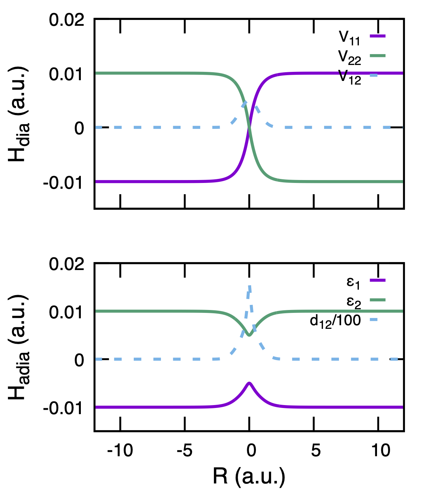

Tully Model-I (FSSH)
This tutorial demonstrates how to run SHARP Pack for the Tully Model-I in serial mode. Follow the steps below to perform the simulation.
Prepare param.in
First, prepare the input parameter file param.in with the required keywords.
For example, at a particular pinit value and nbeads 1 (FSSH method):
#tully model-I input parameters model tully1 nParticle 1 nbeads 1 iseed 12345 tstep 1.0 nsteps 3000 ntraj 1000 ncore 1 pinit 20.0 rsamp gaussian vsamp fixed vreverse never rundtail yes iprint 10 finish
Run Simulation
Run the simulation using one of the following methods:
Direct execution:
$ ./sharp.xUsing a job submission script from the
utilitydirectory, depending on the computing system:# for running on a local machine $ sh job-script-local.sh #for submitting jobs on an HPC cluster (Slurm) $ sh job-script-hpc.sh
Plot Results with Gnuplot
Plot Energy
Create a gnuplot script file
plot_energy.gnu:#!/usr/bin/gnuplot set key right top set term postscript eps colour enhanced 'Helvetica' 24 size 4,4.5 set border lw 2.5 set tics scale 2 set output 'fig-energy.pdf' NOXTICS = "set xtics (''-10,''-5,''0,''5,''10); \ unset xlabel" XTICS="set xtics -10,5,10;\ set xlabel '{/Helvetica=22 R (a.u.)}'" set key samplen 1.0 spacing 1.3 font "Helvetica, 15" set multiplot layout 2,1 @NOXTICS set ylabel "{/Helvetica=22 H_{dia} (a.u.)}" set yr[-.015:0.02] set ytics 0.01 plot 'energy_surface.out' u 1:2 w l lw 5 t'V_{11}',\ 'energy_surface.out' u 1:5 w l lw 5 t'V_{22}',\ 'energy_surface.out' u 1:3 w l lw 5 dt 3 t'V_{12}' @XTICS set ylabel "{/Helvetica=22 H_{adia} (a.u.)}" set yr[-.015:0.02] set ytics 0.01 plot 'energy_surface.out' u 1:6 w l lw 5 t'{/Symbol e}_{1}',\ 'energy_surface.out' u 1:7 w l lw 5 t'{/Symbol e}_{2}',\ 'energy_surface.out' u 1:(colum(10)/100) w l lw 5 dt 3 t'd_{12}/100'
Run the gnuplot script to generate the figure as:
$ gnuplot plot_energy.gnu
 Fig. 1 Diabatic and adiabatic energy surfaces of Tully1 model.
{kind=link}
Plot Populations
Similarly, create gnuplot script
plot_pop.gnuto plotadiabaticordiabaticpopulations:
{kind=link}